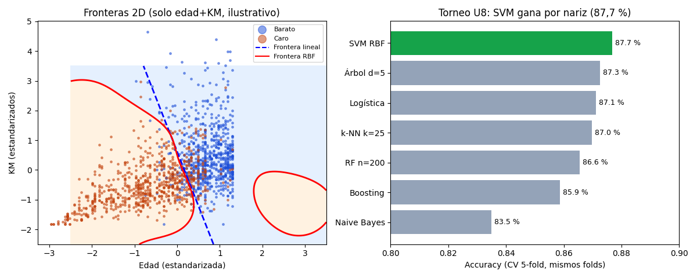

Bloque E · Clasificación · Lección 0037 · mar 20 oct
SVM y comparación final: el torneo de los 7 algoritmos
Win de hoy: la SVM con kernel RBF gana el torneo (87,7 % CV)… por 0,4 puntos sobre el árbol: empate técnico y cierre honesto de la unidad.
1 · SVM: la frontera con más aire
Entre todas las líneas que separan caros de baratos, la SVM elige la que deja el
margen
más ancho: la frontera «más lejos de ambos bandos». Los puntos que tocan el borde del margen son los
vectores de soporte:
mover cualquier otro punto no cambia nada; mover uno de ellos, sí. La perilla C regula la tolerancia:
C chico = margen ancho que perdona intrusos; C grande = margen estricto que los persigue.
2 · Kernel RBF: fronteras curvas sin calcularlas
Si las clases no se separan con una recta, el kernel RBF mide «parecido» entre puntos (alto si son vecinos, ~0 si están lejos) y separa en ese espacio de parecidos: en el plano original la frontera sale curva. Todo con las 5 variables estandarizadas (la SVM vive de distancias, como k-NN).

Ojo con la lectura: el panel izquierdo usa 2 variables solo para dibujar; el torneo usa las 5. La RBF curva gana (0,8767) a la lineal (0,8740), pero por centésimas: señal casi-lineal, kernel apenas ayuda.
Regenerar la figura (mismo resultado versionado en assets/img/toyota/):
python scripts/make_figures.py --only svm-comparacion3 · Torneo final Bloque E (CV 5-fold, mismos folds, mismo target)
| # | Modelo | CV accuracy | Lección | Veredicto en 5 palabras |
|---|---|---|---|---|
| 1 | SVM RBF (C=5) | 87,7 % | 0037 (hoy) | Gana por nariz técnica |
| 2 | Árbol d=5 | 87,3 % | 0035 | Simple, dibujable, casi campeón |
| 3 | Logística | 87,1 % | 0034 | Probabilidades + explicación gratis |
| 4 | k-NN k=25 | 87,0 % | 0033 | Sin entrenar, ahí arriba |
| 5 | RF n=200 | 86,6 % | 0036 | Bosque estable, sin corona |
| 6 | Boosting (HGB) | 85,9 % | 0036 | Serie correcta, nada más |
| 7 | Naive Bayes | 83,5 % | 0035 | Último digno y rapidísimo |
Diferencia entre 1º y 4º: 0,7 puntos (≈10 autos de 1.436). Con este dataset y estas variables, elegir por puntería es lotería: elegí por lo que cada modelo regala (probabilidades, dibujo, velocidad). Y recordá el techo: nadie pasa el 88 % porque la señal (edad, KM) ya está exprimida.
4 · SVM en 8 líneas (reproducí el 87,7 %)
import pandas as pd
from sklearn.preprocessing import StandardScaler
from sklearn.svm import SVC
from sklearn.model_selection import cross_val_score, StratifiedKFold
df = pd.read_csv("../ToyotaCorolla.csv")
cols = ["Age_08_04","KM","HP","cc","Weight"]
X = StandardScaler().fit_transform(df[cols]) # ¡obligatorio para SVM!
y = (df["Price"] > 9900).astype(int).values
cv = StratifiedKFold(5, shuffle=True, random_state=42)
print(cross_val_score(SVC(kernel="rbf", C=5.0), X, y, cv=cv).mean().round(4)) # 0.8767Tu turno: probá kernel="linear" (0,8740) y C=0.5 con RBF (0,8753):
tres configuraciones, tres centésimas. El dataset manda, no la perilla.
5 · Quiz (auto-chequeo inmediato)
6 · Fuente primaria y cierre
Para profundizar (1 fuente): James et al., An Introduction to Statistical Learning — cap. 9 (SVM). Más contexto en RESOURCES.
Cierre Bloque E (6–20 oct): k-NN (0033) → logística (0034) → NB+árboles (0035) → bosques (0036) → SVM+torneo (hoy); techo del problema ~87–88 %. Siguiente en el orden: 0028 · Distancias y similaridad (Bloque F, mar 27 oct: distancias).